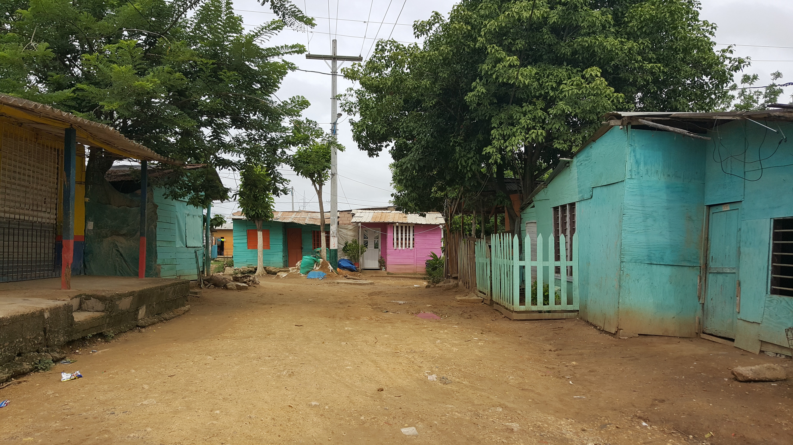

“
Según el Centro Nacional de Memoria Histórica, “el
99%
de los municipios colombianos han sido
expulsores
. A la luz de las cifras precedentes, no es excesivo caracterizar a Colombia como una
Nación desplazada”
